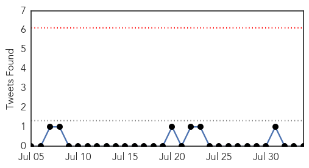

Unknown
30-Day Web Trend
0 alerts, 0 warnings

30-Day Twitter Trend
0 alerts, 0 warnings

Article Locations
Article Confidences

Top Articles:
- 0.995
- S. Korea's MERS cases, fatalities remain flat
- 0.991
- 4 dead and 65 sick from Legionnaires' disease outbreak in NYC
- 0.990
- 4 dead, 65 infected, New York City on alert
- 0.985
- 5 Things to Know About Legionnaire's Disease After 7 Deaths...
- 0.985
- 4 Dead, 55 Hospitalized in Outbreak of Legionnaires' Disease in New York
- 0.971
- Bacteria detected in cooling systems after hospitalizations, deaths in the Bronx.
- 0.961
- Salmonella illness outbreak may be linked to pork
- 0.954
- Bronx Legionnaires’ Outbreak Kills 4, Sickens 67 -- NYMag
- 0.949
- Washington's Salmonella outbreak increases to 90 cases
- 0.929
- St John of God Geelong gastro outbreak contained
- 0.927
- ‘Travel time to hospital a concern’
- 0.917
- Chicago Tribune
- 0.917
- Chicago Tribune
- 0.917
- Chicago Tribune
- 0.917
- Chicago Tribune
- 0.917
- Chicago Tribune
- 0.903
- Health department confirms Purdue hantavirus case
- 0.888
- Monsoon presses disease alarm
- 0.886
- Bronx residents in fear over Legionnaires' disease
- 0.880
- 71 Reported Cases Of Legionnaires' Disease So Far
- 0.866
- A masked man stands next to an excavator as it digs trenches in the Islamic State-held Syrian town of Jarablus as seen from the Turkish border town of Karkamis
- 0.857
- Simple explanation for patient who caused Kentucky ER lockdown
- 0.828
- FDA says investigating latest cyclosporiasis outbreak
- 0.796
- Virginia Mason failed to properly report ‘superbug’ outbreak, state says
- 0.747
- Fourth Person Dies Following Outbreak of Legionnaires' Disease
- 0.728
- Four people dead from Legionnaires' disease in New York
- 0.712
- Rhode Island mandates HPV vaccine for seventh-graders
- 0.711
- Texas A&M Entities Helping Understand, Monitor Chagas Disease
- 0.684
- Public Health Nurse of the Year- Lori Hendrickson
- 0.677
- Kosovo votes for new war crimes court
- 0.677
- Some 6,000 homes evacuated as wildfires ravage California
- 0.677
- US airpower to defend Syrian rebels, including from Assad forces
- 0.677
- In pictures: Raging wildfires prompt evacuations in California
- 0.677
- Obama to unveil 'biggest step ever' in climate fight
- 0.677
- Obama takes action on climate change with tough Clean Power Plan
- 0.677
- Nigerian troops free 178 Boko Haram captives
- 0.677
- Jury paves way for Colorado gunman to face death penalty
- 0.677
- Jewish extremist leader arrested after anti-Arab violence
- 0.677
- In pictures: Child refugees’ photos come to Paris
- 0.677
- Volunteers defy Hungarian govt to welcome migrants
- 0.677
- High speed train collides with tractor in Western France
- 0.677
- Monitors report ‘hundreds’ of civilian deaths from coalition strikes
- 0.677
- Gunmen shoot leading Burundi human rights activist
- 0.677
- AFP correspondent in Burundi detained and beaten
- 0.673
- Typhoid Spreads Throughout Yarmouk Camp, Doctors Warn of Epidemic
- 0.665
- Editorial: Flu jab rebels should get another job
- 0.660
- Nightmare across five states as flooding and landslides claim 101 lives and leave lakhs homeless
- 0.658
- Fake Laboratories worsening ill health and ruining lives
- 0.658
- Cyclospora cases grow and Salmonella investigations continue
- 0.650
- 32 Human Samples from Brucellosis-Hit Town of Rila Sent for Testing
Showing top 50 articles...
Top Tweets:
-
No tweets found for Aug 03, 2015
Yellow Fever
30-Day Web Trend
0 alerts, 0 warnings
30-Day Twitter Trend
0 alerts, 0 warnings

Article Locations

Article Confidences

Top Articles:
-
No articles found for Aug 03, 2015
Top Tweets:
-
No tweets found for Aug 03, 2015